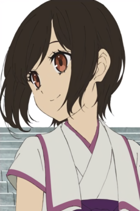
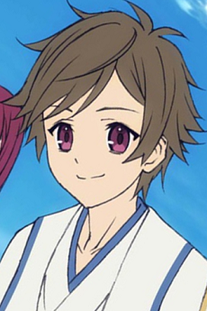
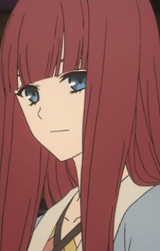
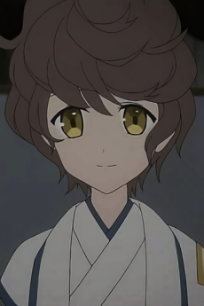
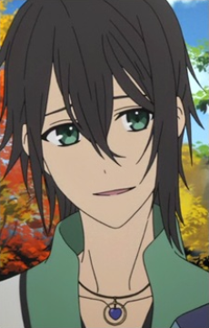
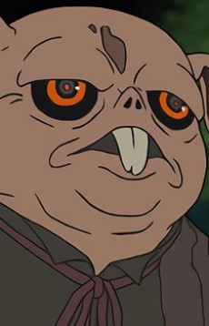
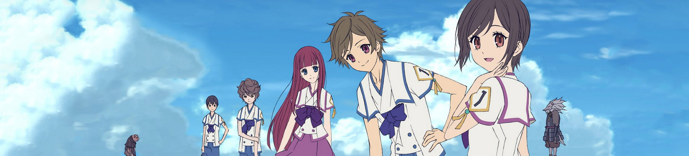
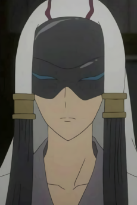
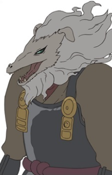

Protagonist
渡边早季
Watanabe Saki
故事的第一人称叙述者。小时候咒力测试成绩并不突出，却有一股别人没有的执拗： 越是被大人含糊过去的事，她越要问到底。全书以她二十六岁时写给「一千年后某个人」的信展开， 那些信既是回忆，也是一份留给未来的证词。
他们是同一年进入完人学校的同学，一起在夏天的河边捉过螃蟹，一起被罚过站。 十四年后，五个人里只有一个还留在町子里。

故事的第一人称叙述者。小时候咒力测试成绩并不突出，却有一股别人没有的执拗： 越是被大人含糊过去的事，她越要问到底。全书以她二十六岁时写给「一千年后某个人」的信展开， 那些信既是回忆，也是一份留给未来的证词。

早季的青梅竹马，行动永远快过思考。咒力优秀，胆子也大，是五人组里最先敢往八丁标外面走的人。 他和早季的关系贯穿全书：从抢糖果的玩伴，到最后并肩站在町子命运前面的人。

早季最好的朋友。温柔、漂亮、咒力出众，会画画也会唱歌，是那种被所有人喜欢的女孩。 正因为太完整，她的选择才格外让人心疼——她最后做的那个决定， 改变了整个町子的历史。

五人组里最安静的一个。胆小、爱哭、身体不好，但咒力其实是同期里最高的之一。 他和真理亚之间那种小心翼翼的感情，是全书里少有的、纯粹属于少年人的温柔段落。

天才。成绩、咒力、相貌、人缘，没有一样不是最好的。他是早季最初的憧憬， 也是最早触到这个世界天花板的人——因为看得太清楚，所以最先坏掉。 他的结局是全书第一个真正的转折。

化鼠的领袖。在人类眼里，他是一只卑微、谄媚、懂得讨好的畜生； 在化鼠眼里，他是唯一敢替族群争取「人」的身份的政治家。 这本书最锋利的一刀，是他站在被告席上说的那句话。
五个人的关系并不复杂：瞬是所有人仰望的中心，真理亚和守是一对，早季和觉是打打闹闹的青梅竹马。 一个再普通不过的小学班级。
但在这个町子里，「普通」是有保质期的。随着课业加深、咒力变强， 他们开始接触到成年人世界的那套筛选逻辑：谁会被留下，谁会被「转学」， 谁的名字会从家里的相册上消失。
书里最残忍的地方在于，这一切都不是阴谋，而是一套被所有人默许的、 为了「大家好」而运转的常识。孩子们不是被坏人害死的， 他们是被善意处理掉的。

他们曾在这片田埂上跑过整个夏天
 镝木肆星 | 町内最强的咒力者，气场压人，被孩子们当作怪物一样害怕。在真正的灾难面前，他证明了自己确实是町子最后的一道墙。 |
|---|---|
| 渡边瑞穗 | 早季的母亲，町内图书馆的司书。她比大多数大人更早知道真相，也选择了用自己的方式守住女儿。 |
| 朝比奈富子 | 町内最年长的咒力者之一，见证了村庄制度建立的过程。她身上保存着一段没有人愿意提起的历史。 |
 奇狼丸 | 化鼠部族的战士，性格直率，对人类的态度和斯奎拉完全不同。他让早季第一次意识到：化鼠也是一个个具体的人。 |
我们不是被教导要善良，—— 读后记
我们是被教导要害怕。